运算操作
注意
所有运算不支持乘除法优先，也不支持括号优先级，统一从左到右的顺序，请特别注意。
所有的运算操作可以在上位编辑状态下写入控件事件中，也可以串口传输过来(串口传输记得加三个0xff的结束符)
所有的运算操作都不支持多余空格，添加进任何空格，编译都会报错
数值类型变量运算操作
支持的运算符：
符号 |
作用 |
+ |
加法运算或者字符串拼接 |
- |
减法运算或者字符串删除末尾若干字符 |
* |
乘法运算 |
/ |
整除运算 |
% |
取余运算 |
& |
按位与 |
| |
按位或 |
^ |
按位异或 |
<< |
按位左移 |
>> |
按位右移 |
&& |
逻辑与 |
|| |
逻辑或 |
正确的运算操作
n0.val=n0.val+n1.val+2
n0.val++
n0.val+=2
n0.val=n1.val%3
n0.val=h0.val*10
n0.val*=10
n0.val|=n1.val //按位或
n0.val=n1.val&0x03 //按位与
n0.val=n1.val^0x05 //按位异或
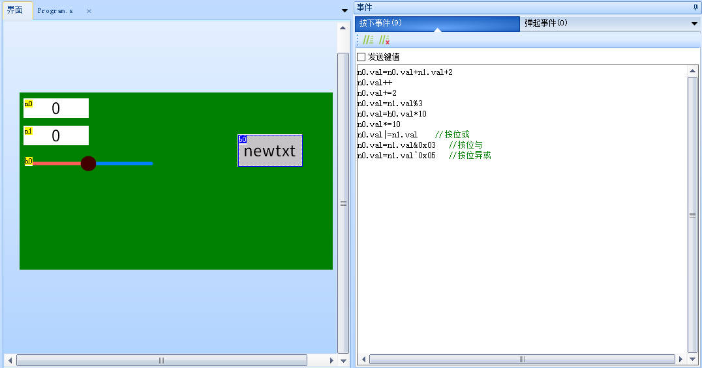
错误的运算写法1
//错误原因：数值类型的变量必须跟数值类型的变量做运算，并赋值给数值类型的变量
n0.val=t0.txt+1
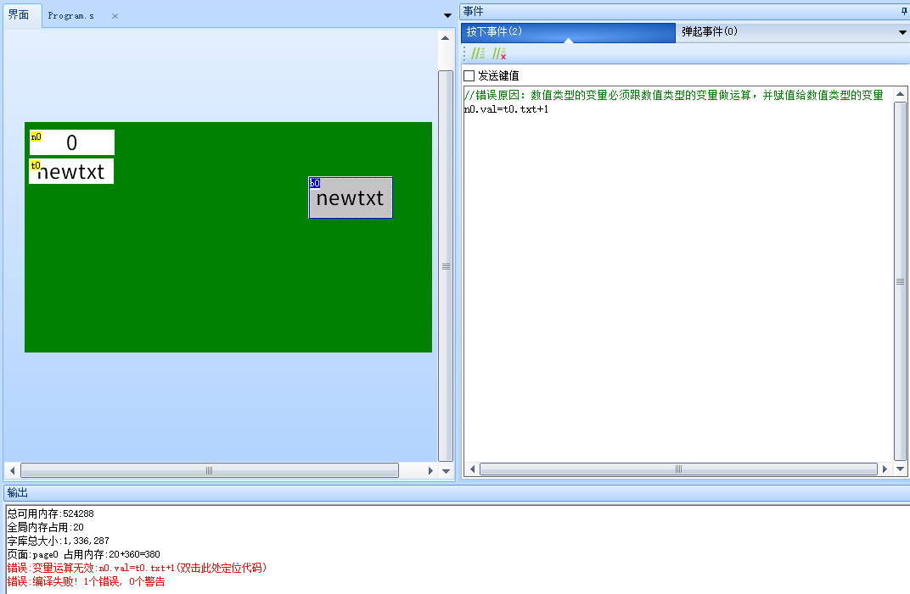
错误的运算写法2
//错误原因：数值类型的变量必须跟数值类型的变量做运算，并赋值给数值类型的变量
n0.val=1+"2"
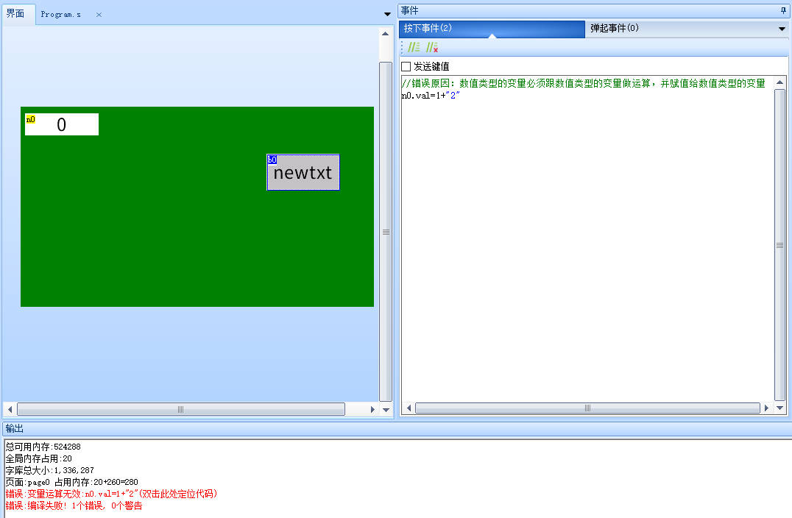
注意:当数字控件的最高位为1时(即负数),进行右移操作时,最高位将补1,例如0x80000000>>31后变为0xFFFFFFFF而不是0x01
字符串类型变量运算操作
运算符 “+”
字符串拼接
t0.txt="1"+"2"
t0.txt=t0.txt+t1.txt
t0.txt+="abc"+"xy"
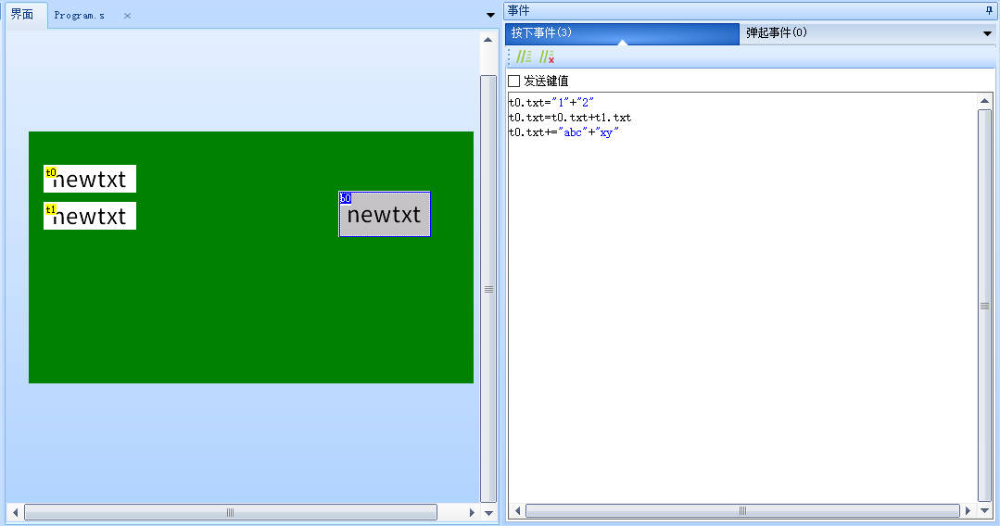
以下为错误的运算写法
//错误原因：1和2都是数值常量 字符串类型的变量只能跟字符串常量/变量相加，不能跟一个数值常量/变量相加
t0.txt=1+2
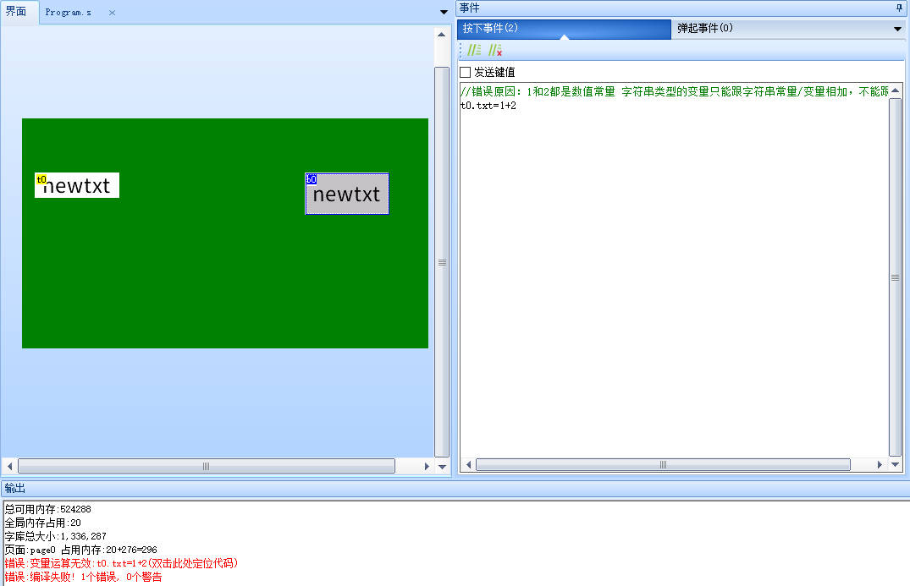
以下为错误的运算写法
//错误原因：h0.val是数值变量,不能跟字符串变量相加,必须使用covx转换后再能相加
t0.txt=t0.txt+h0.val
运算符 “-”
字符串删除
t0.txt=t0.txt-1 //删除t0.txt最后1个字符
t0.txt=t0.txt-3 //删除t0.txt最后3个字符
t0.txt-=n0.val //删除t0.txt最后n0.val个字符
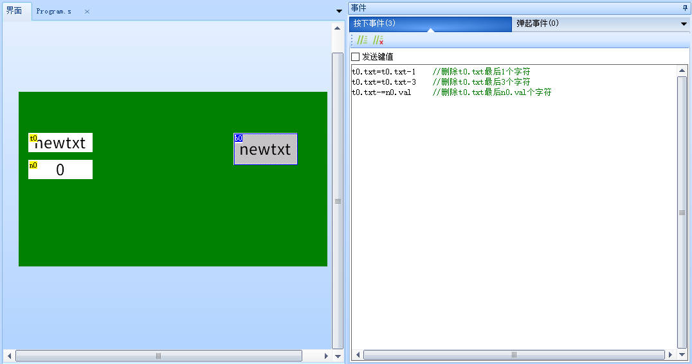
在字符串变量运算中，”-“代表删除的意思,所以用”-“的时候，字符串变量必须”-“一个数值常量/变量来表示删除多少个字符，这里跟用”+”是不一样的。用”+”的时候必须是字符串+字符串；用”-“的时候必须是字符串-数值。
位运算
注意
在进行位运算时，写16进制时，必须补全为偶数位长度。
例如：
0x9，必须补全成0x09
0x100，必须补全成0x0100
0x12345，必须补全成0x012345
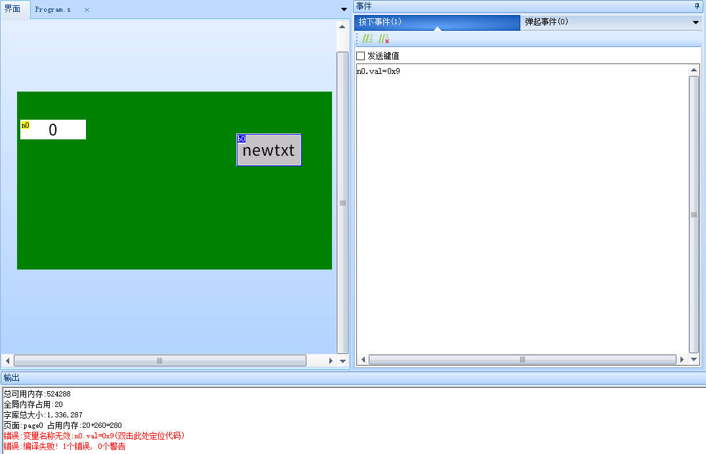
按位与
n0.val=0xF0&0x0F //结果为0x00
n1.val=n0.val&0xff //取n0.val最低1字节数据
n1.val=n0.val&0x01 //取n0.val最低1bit数据
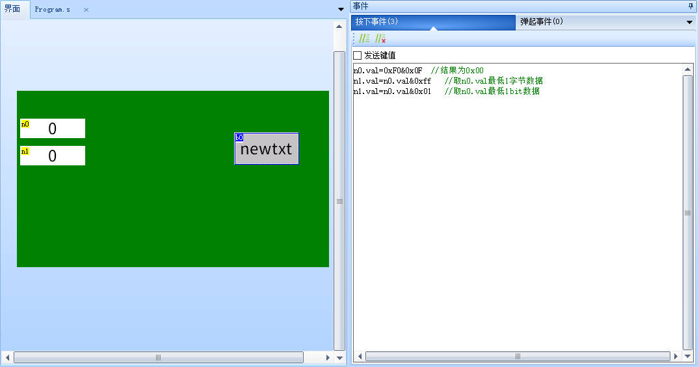
按位或
n0.val=0xF0|0x0F //结果为0xFF
按位异或
使某些特定的位翻转
例如对二进制形式10100001(0xA1)的第2位和第3位翻转，则可以将该数与00000110(0x06)进行按位异或运算。
n0.val=0xA1^0x06
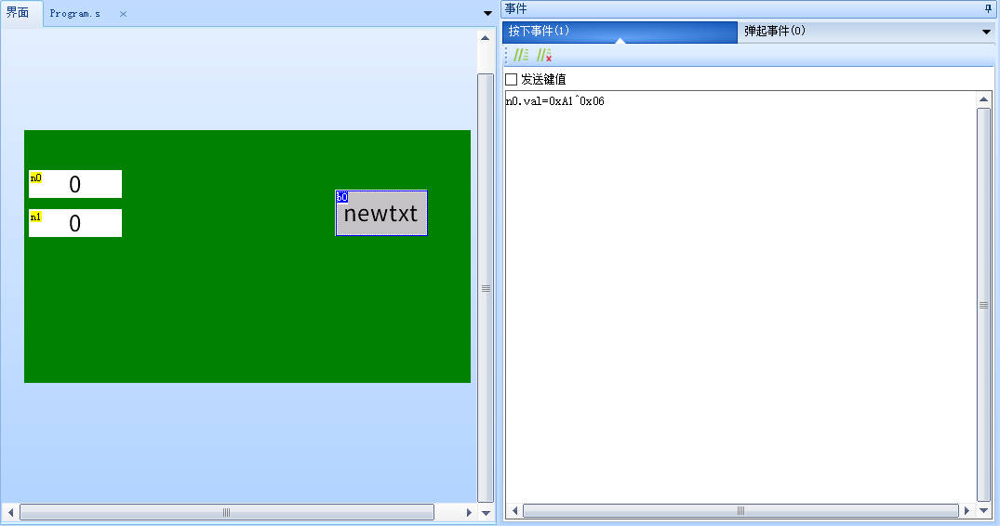
翻转按钮状态
bt0.val^=0x01
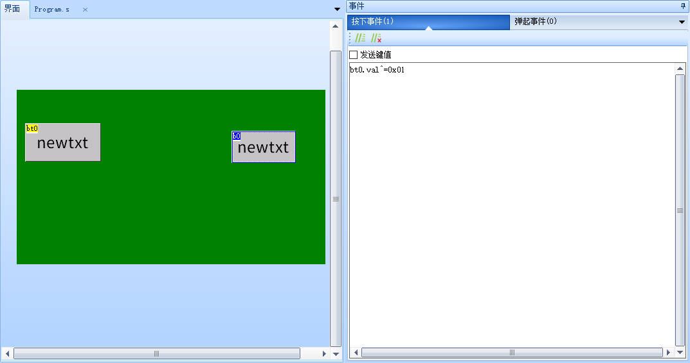
按位取反
参考按位异或，将所有的位翻转就是按位取反
按位同或
按位左移
n0.val<<=1 //左移1位，相当于乘2
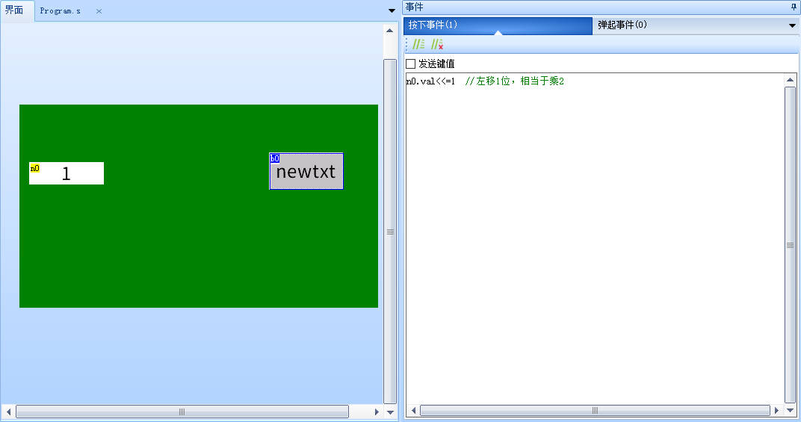
按位右移
n0.val>>=1 //右移1位，相当于除2
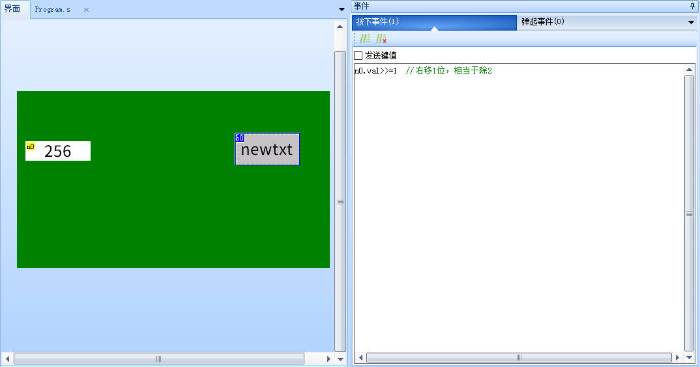
运算操作-相关链接
暂无